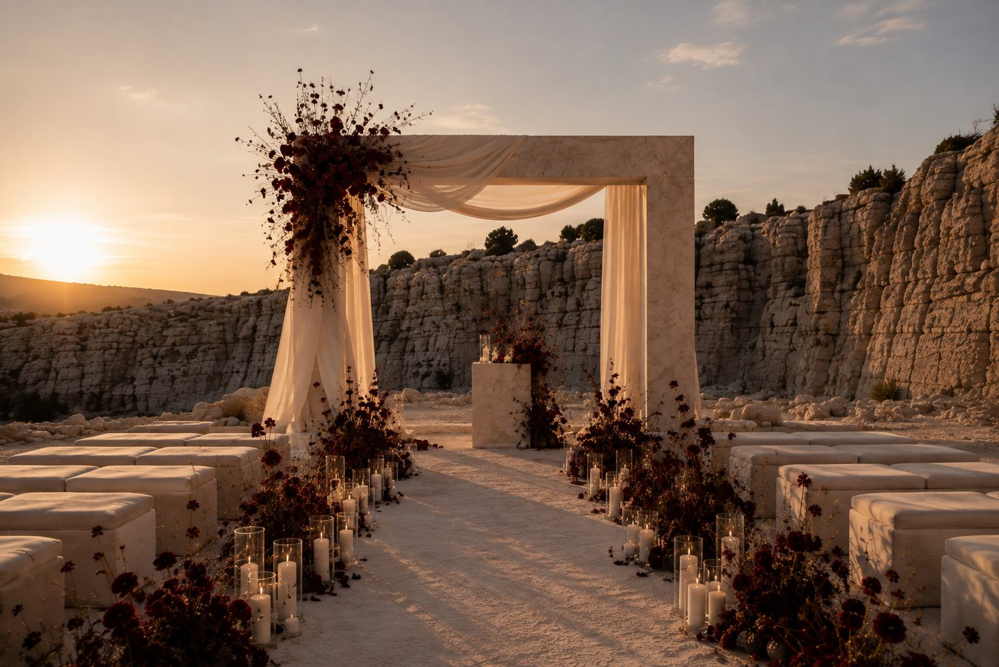
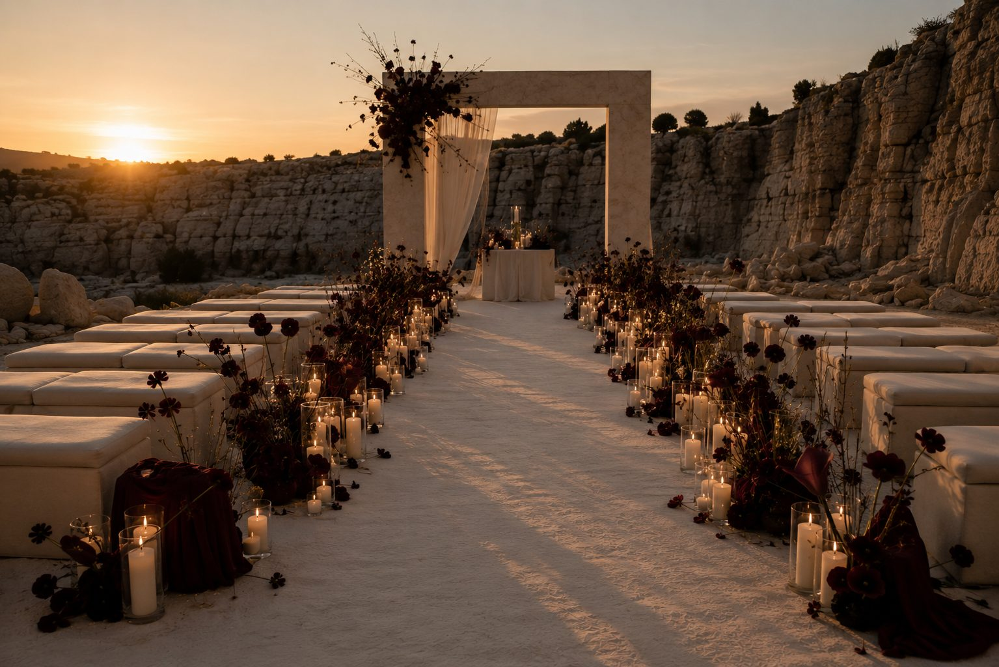
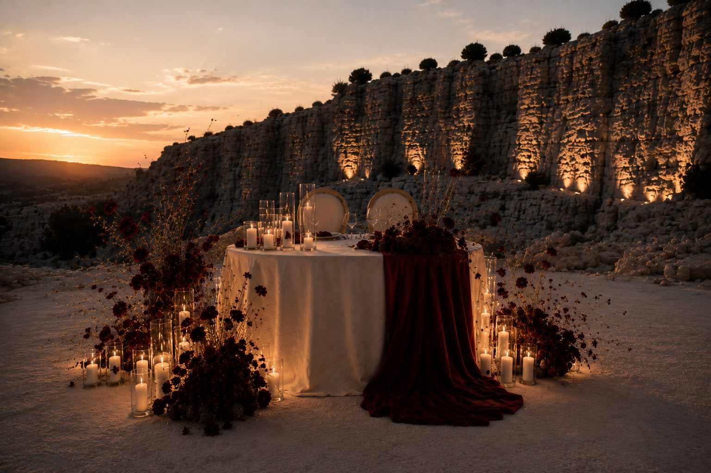
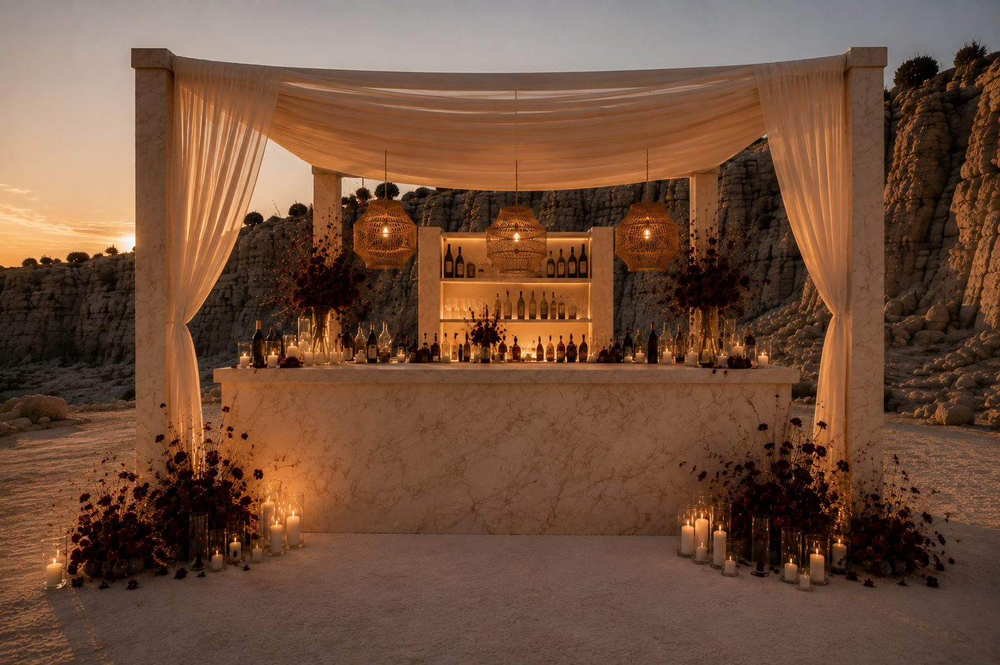
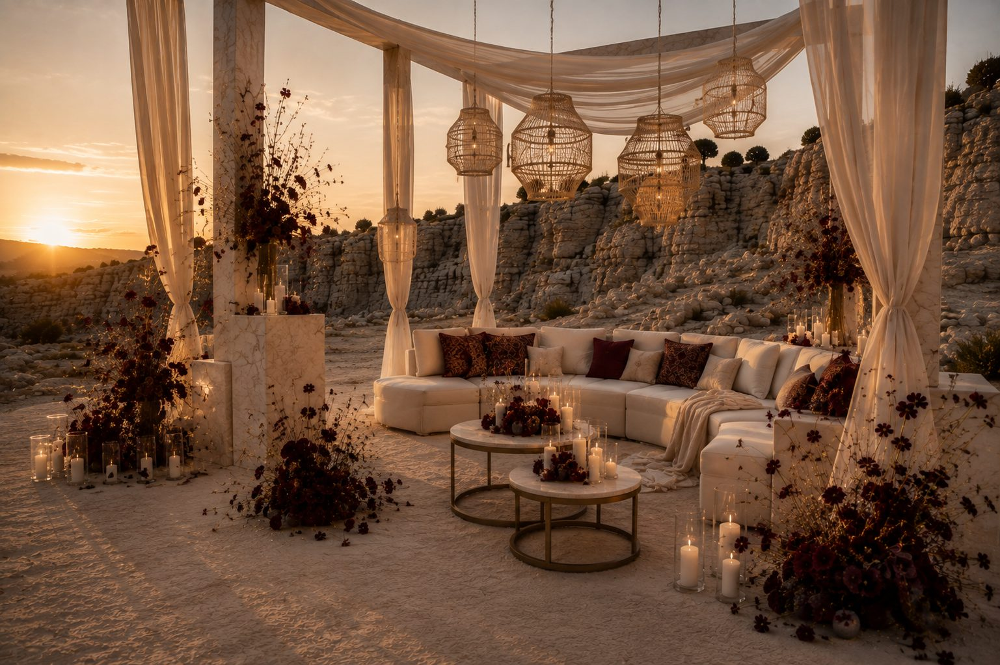
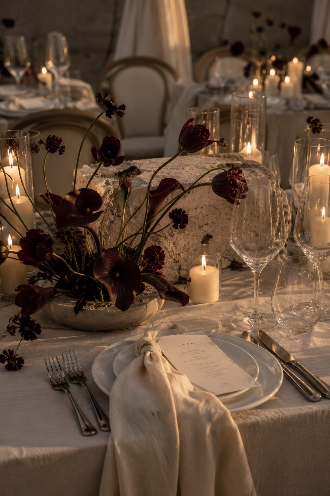

The sequence is built for movement: guests enter through a softened architectural frame, then follow light deeper into the world.






No. 02 / Lithica - Reception
A wedding world imagined as a cinematic corridor of fabric, glass and stone.
The sequence is built for movement: guests enter through a softened architectural frame, then follow light deeper into the world.





